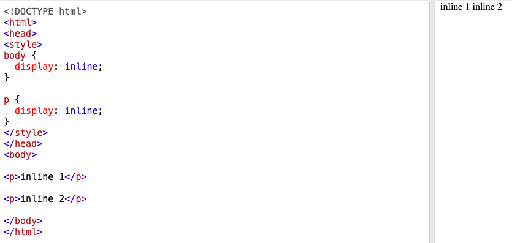
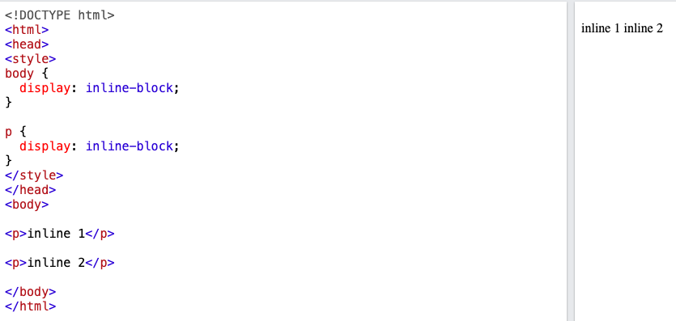
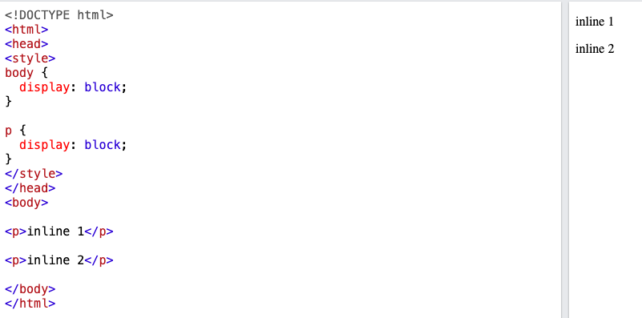

In simple English, imagine that we are in an sport event in a stadium with rows of seats. All spectators with an inline seated , will sit next to eachother. so we all have the same seat, we cannot make those sits larger or smaller! They have one size. This is inline
Some people may know each other, and they are in VIP seats. These are customized and can be adjusted to be larger or smaller. These seats might be at the same row with fixed seats but with extras. This is inline-block
Some seats are special seats, and they have their unique rows, like seats for disable people, they are standard seats but they have their own specific area and blocked from the crowd. This is block
The inline element can have right and left paddings and margins, but they cannot have top and bottom padding and margin. We cannot set width and height but other elements can be placed on its sides. Thers is no line break before or after but it can tolerates html elements next to it. As you can see in the image below, the both paragraph
The inline-block element is similar to an inline element, but it behaves as a block element. That is it allows other elements to sit to the left and right of it, and accpet the the top and buttom paddings and margins. We can also, set height and width to an inline-block.
The block element has some whitespace above and below it and does not tolerate any HTML elements next to it. It forces a line break after the block element acquires full-width if width not defined.
